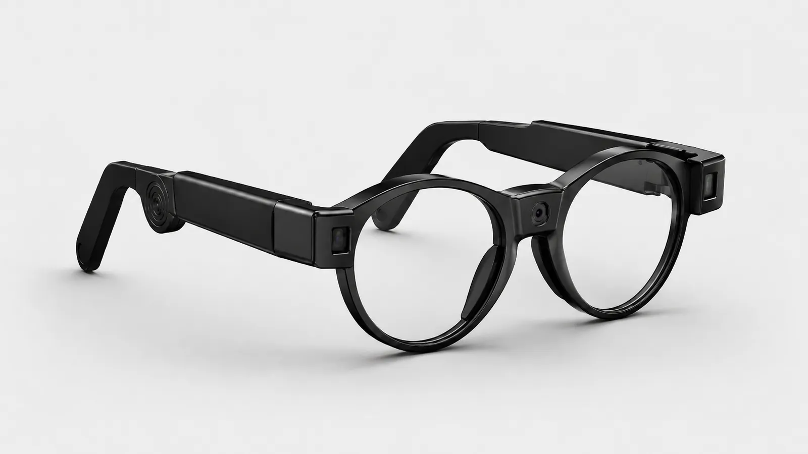

Uso por estación
HallazgoPausa larga en la mesa de armadoCon su fotograma, para que tú decidas si fue espera o trabajo.
 Hablemos
Hablemos
Alba Vision · Visión e inteligencia artificial
Creamos soluciones de visión e inteligencia artificial que acercan la tecnología a todos.
Nuestro origen
Alba nació para que una persona ciega supiera qué tiene enfrente. Hoy esa misma mirada mide el trabajo de una cocina y orienta satélites entre las estrellas.
Visión Un futuro en el que la tecnología nos permita ver más allá de lo que alcanzan nuestros ojos.
01 UNBLIND · Lentes
Aquí empezó Alba. UNBLIND lee, describe y ubica lo que tienes enfrente, en el teléfono o en unos lentes con cámara.
En desarrollo
Lee textos en voz alta, describe la escena y reconoce productos y códigos.
Te guía con sonido hasta tus objetos guardados y reconoce a las personas que tú registras.
Se usa con la voz y con TalkBack, sin tener que ver la pantalla.
02 Vision Ops
Convierte el vídeo de un turno en tiempos, esperas y uso de cada estación, con el fotograma que respalda cada número.
En producción
Uso por estación
Restaurantes y cafeterías
Tiempo con gente en cada estación, desplazamientos y pausas largas para revisar una por una.
Food trucks
Cuánto esperan tus clientes y a qué ritmo sale la plancha.
Taquerías
Todas tus sucursales en una sola cuenta. La medición con cámara al pecho sigue en prueba.
03 Alba Space
Un solo sensor óptico para que un satélite pequeño sepa hacia dónde apunta, siga basura espacial y se acerque a otro objeto.
En pruebas en tierra
04 Alba Labs
El Dev Kit: smartglasses abiertos para crear tus propias aplicaciones con visión artificial. En la industria, los lentes van como piloto bajo pedido.

05 Cómo trabajamos
Platicamos de tu operación y vemos si la visión artificial resuelve algo concreto.
Medimos un caso real tuyo; en Vision Ops puedes empezar subiendo un vídeo.
Unas semanas con tu operación, con un reporte que revisamos juntos.
Si funciona, lo conectamos a tu día a día.
Caso · Universidad Anáhuac
Visión integrada a una máquina de laboratorio para alinear e inspeccionar muestras con captura controlada y análisis automático: un proceso consistente, trazable y listo para comparar cada prueba.
06 Surface Ops
La cuadrilla toma la foto en la calle y la oficina recibe el contorno, el área, el corte y la ubicación, sin cinta ni croquis a mano.

Hablemos
Platícanos de tu operación y te decimos con honestidad si lo podemos medir.